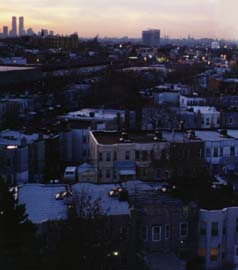
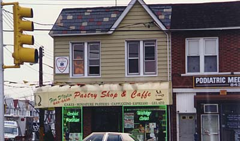

Queens -- South West Region
(Maspeth, Ridgewood, Ozone Park, Kennedy Airport and Jamaica Bay)
Maspeth and Ridgewood

Maspeth is where I always imagined Archie Bunker to
have lived, though I don't think "All In The Family"
ever said for sure. These are humble white-bread
neighborhoods, nothing fancy. Catch an old
episode of the show on late-night TV and you'll get
the idea.
Ozone Park
Ozone Park is now famous as the home of gangster John Gotti, who
throws a big street party every Fourth of July. The
neighborhood is largely Italian, and everybody loves John Gotti
around here.
Jack Kerouac
moved here with his family while he was attending Columbia University. The
old-fashioned family from small-town Lowell, Massachusetts never felt
comfortable in the busy streets of New York, and Kerouac wrote often
about this, especially in his first novel, The Town and the City,
although in this fictional account the family moved to Brooklyn rather
than Queens. I recently found the house he lived in, and here it is:

No wonder they hated it! The house is on an isolated corner on the
busy Cross Bay Boulevard. The Kerouac's should have moved to Forest
Hills or Corona, or at least to a quieter house farther south in
Ozone Park. But then of course the Kerouac legend may never have
taken root.
Kennedy Airport
This is a huge airport, and dominates the entire region of
South-Central Queens. Watch Martin Scorsese's great film
Goodfellas for an idea of life in the vicinity of
Kennedy Airport, especially among the gangsters drawn to it
for the criminal possibilities it offers. The main character
in the film (the guy played by Ray Liotta) actually lived and ran
a nightclub in Forest Hills, but the airport is the main
attraction to all these guys.
The airport was known as Idlewild until it was renamed for
the late President.
Jamaica Bay
The airport dominates the eastern edge of this bay, but there's
a lot of marine activity here as well. There's a beautifully kept
nature preserve on the biggest island in the bay, where you walk
on quiet dirt paths and listen to the sounds of thousands of
birds against the hushed silence of the Bay. The Bay is
very much alive with nature, and the numerous bridges
between the Rockaway Beach peninsula and the mainland are
always crowded with fishermen.
Return To Queens Map
Queensboro Ballads
by
Levi Asher